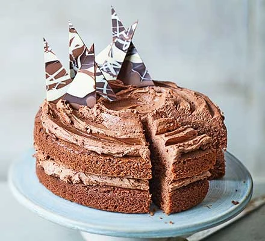

Chocolate Cake

Description
Chocolate cake is a cake flavored with melted chocolate, cocoa powder, or both.
Ingredients
For the cake:
- 200g golden caster sugar
- 200g unsalted butter, softened plus extra for the tins
- 4 large eggs
- 200g self-raising flour
- 2 tbsp cocoa powder
- 1 tsp baking powder
- ½ tsp vanilla extract
- 2 tbsp milk
For the buttercream
- 100g milk chocolate, chopped
- 200g butter, softened
- 400g icing sugar
- 5 tbsp cocoa powder
- 2 tbsp milk
For the chocolate shards (optional)
- 50g dark chocolate
- 25g milk chocolate
- 25g white chocolate
Steps
- Heat oven to 190C/170C fan/gas 5. Butter the base and sides of two 20cm round sandwich tins and line the bases with baking parchment.
- In a large bowl, beat together 200g golden caster sugar, 200g softened unsalted butter, 4 large eggs, 200g self-raising flour, 2 tbsp cocoa powder, 1 tsp baking powder, ½ tsp vanilla extract, 2 tbsp milk and a pinch of salt until pale.
- Divide the mixture between the prepared tins. Bake for 20 mins or until a skewer inserted into the centre of the cake comes out clean.
- Leave to cool in the tin for 10 mins, then turn out onto a wire rack to cool completely.
- For the buttercream, put 100g chopped milk chocolate in a heatproof bowl and melt in the microwave, stirring every 30 secs. Leave the melted chocolate to cool for 5 mins.
- Mash 200g softened butter and 400g icing sugar together with a fork, then switch to a wooden spoon or electric beaters, if you have them.
- Sift in 5 tbsp cocoa powder with a pinch of salt and pour in the melted chocolate and 2 tbsp milk. Mix again until smooth.
- On a cake stand or large plate, sandwich the cakes together with half of the buttercream, then spread the rest on top. Decorate with chocolate shards, if you like.
- To make chocolate shards: melt 50g dark chocolate and pour it onto a tray lined with baking parchment or foil.
- Now melt 25g milk chocolate and 25g white chocolate and drizzle them over the dark chocolate before it sets.
- Shake the tray gently to level the mixture then leave to set somewhere cool. Chop into shards.